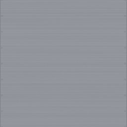
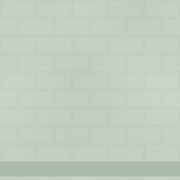
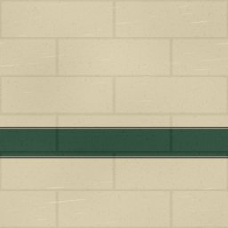
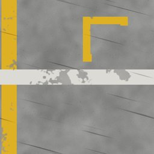
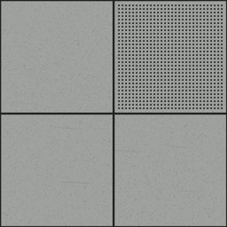

← All scout pages · Public copy, pages as of 2026-10-16 11:18. A Poly Haven prospect shows our own copy of its CC0 colour map, flat and unlit (Poly Haven’s previews are not CC0; its page has the lit one). The offline 3D viewer stays on the owner’s machine.
Facility and institutional scout — CC0 prospects
Every row of Facility and institutional that the 16 Oct material grid uses (HIT) or proposes (GAP), from docs/plans/SURFACE_LIST-proposed-2026-10-16.md (commit d770ab5c), with up to three CC0 prospects from Poly Haven and ambientCG. Real photos are preferred; a generated (computer-made) set is listed only when neither library has a photo of that look, and it is marked. Built 2026-10-16 the way scout facility builds a page, plus each prospect's real size and 2K download size. Read-only: nothing in the game was changed, nothing was downloaded at full size, and nothing entered the records.
3D: an ambientCG prospect's picture opens ambientCG's own 3D preview; a Poly Haven prospect's page has its 3D preview. Our offline viewer of the game's own maps is not on this public copy.
9rows scouted (8 HIT, 1 GAP) of 9 on the list
4with a real-photo prospect
4computer-made only
1nothing found
0left out as [UNUSED?]
Left out, marked [UNUSED?] on the list (no grid cell uses them): none. Already approved or under review in docs/materials/facility.json: none.
facility_clean_room_wall_panelHIT — the grid uses it
Now in the game code-drawn · status original drawn by code: dino_game_rnd/surface_gen/gen_facility_clean_room_wall_panel.py Thumbnail: the game's drawn picture
Nothing real: computer-made sets only.
No photo of clean-room wall panels in either library. Two computer-made smooth white plastics are shown; neither has the panel joints, which would be drawn on.
Route: Procedural likely: flat white with a joint grid is a small Material Maker build.
02
Clinical stainless
facility_clinical_stainlessHIT — the grid uses it

Now in the game code-drawn · status original drawn by code: dino_game_rnd/surface_gen/gen_facility_clinical_stainless.py Thumbnail: the game's drawn picture
Nothing real: computer-made sets only.
No real-photo stainless or brushed steel in either library (the Metal page found the same on 10 Oct). Computer-made brushed steels shown. The game's Stainless panel already wears ambientCG Metal012, which you allowed on 8 Oct.
Route: A computer-made set (these, or Metal012 again) or a procedural brushed steel; no photo is coming.
03
Seamless epoxy wall
facility_seamless_epoxy_wallHIT — the grid uses it

Now in the game code-drawn · status original drawn by code: dino_game_rnd/surface_gen/gen_facility_seamless_epoxy_wall.py Thumbnail: the game's drawn picture
Real photo prospect found.
No epoxy-coated wall as such. Bricks019 is glossy cream-painted block, the closest to a hard coat over block coursing; painted_concrete is a green-painted wall with chips; Bricks008 is white-painted block. Fair fits; our pale green would be a tint.
facility_frosted_lab_glazingHIT — the grid uses it
Now in the game code-drawn · status original drawn by code: dino_game_rnd/surface_gen/gen_see.py Thumbnail: the game's drawn picture
Nothing real, and nothing computer-made either.
Nothing found: neither library has glass panes, photo or computer-made (the Glass page found the same on 10 Oct).
Nothing found in Poly Haven or ambientCG.
Route: Not a photo job: frosted glass comes from the material settings (rough, see-through). A shader/procedural build is the route; Material Maker only for a fine frosting pattern.
05
Painted cinderblock, institutional
facility_painted_cinderblock_institutionalHIT — the grid uses it

Now in the game code-drawn · status original drawn by code: dino_game_rnd/surface_gen/gen_facility_painted_cinderblock_institutional.py Thumbnail: the game's drawn picture
Real photo prospect found.
Bricks019 is cream-painted concrete block, almost our colour and coursing; Bricks008 is white-painted block. The green band would stay drawn on top.
Now in the game code-drawn · status original drawn by code: dino_game_rnd/surface_gen/gen_facility_hazard_striping.py Thumbnail: the game's drawn picture
Real photo only as a weak fit (the note says why).
No photo of yellow-and-black hazard stripes. Sticker001 is a real photo of diagonal warning stripes, but red, white and blue: a weak fit. PaintedMetal016 (computer-made) is yellow-and-black diagonal stripes over rusty metal, very close to ours; listed because no photo of this look exists.
Route: Procedural likely for the clean look: diagonal stripes plus a worn-paint mask.
07
Painted floor zone markings
facility_painted_floor_zone_markingsHIT — the grid uses it

Now in the game code-drawn · status original drawn by code: dino_game_rnd/surface_gen/gen_facility_painted_floor_zone_markings.py Thumbnail: the game's drawn picture
Nothing real: computer-made sets only.
No photo of a floor with painted safety lines. ambientCG's computer-made road surfaces with painted lines shown: Road009C has a yellow line over patched grey concrete, the closest; Road009A a clean yellow line; Road007 white lines.
Route: Procedural likely: a real concrete-floor photo (see Concrete: Poured smooth, Polished) with the lines painted on as an overlay.
08
Raised access floor panel
facility_raised_access_floor_panelHIT — the grid uses it

Now in the game code-drawn · status original drawn by code: dino_game_rnd/surface_gen/gen_facility_raised_access_floor_panel.py Thumbnail: the game's drawn picture
Real photo only as a weak fit (the note says why).
No raised access floor in either library. Both photos are floors of big square grey slabs with clear joints, close from a few steps away; neither has our one perforated airflow tile. Weak-to-fair fits.
Not in the game yet: a new entry the 16 Oct grid proposes
No current look List note: procedural (already a DESIGN.md §16 addition, never added to the list)
Nothing real: computer-made sets only.
No photo of a black lab worktop. Computer-made black plastics shown: Plastic012A has a fine satin grain like epoxy resin; Plastic011 is smoother and greyer; Plastic006 is worn black.


 CC0 colour map · our copy
CC0 colour map · our copy